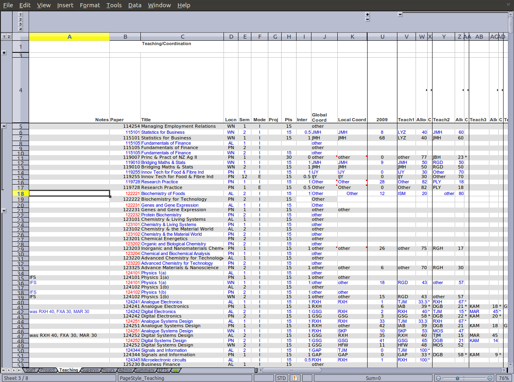

Introduction
- My project involves two projects
- Workload
A Web based application for managing academic staff
- Student Programme Planner
An application to aid in the planning of a students programme of study for their entire degree. This only covers the papers they may want to take to achieve their degree.
- Workload
Workload
- Workload is
- A measurement tool used to monitor staff workloads
- What are workload hours?
-
A way of approximating the fairness of a individual staff member,
cluster group and all SEAT staff.
-
1900 workload hours each
- Teaching Allocations
- Coordination of papers
- Supervision of postgraduates
- Administration roles
-
1900 workload hours each
- Management tool to aid in the distribution of work over the whole of SEAT.
- It is a abstract measurement not meant to represent actual hours
-
A way of approximating the fairness of a individual staff member,
cluster group and all SEAT staff.
Original idea

Reality

Current workload tool
- Microsoft Excel Spreadsheet application
- Is complicated and hard to use
- Time consuming to collate data
- The amount of data it can store is coming to the maximum Excel can take
The new Workload Application
- Open source
- Configurable
- Responsive
- Web application
- Client side
- jQuery
- Ajax
- HTML
- CSS
- jQuery
- Server side
- Python
- Django
- MySQL
- Microsoft Access
- Python
- Client side
Concurrency and Security
- 3 types of users
- How concurrency issues were avoided
- How important is it?
Reflections
- Django
- MTV view
- Places structure on your application
- Places structure on your application
- Models
- Allow you to develop database tables independent of specific DB
- Easier to create tables
- Allow you to develop database tables independent of specific DB
- In general
- Saves time and energy for most basic tasks
- Documentation is still lacking in some areas
- Saves time and energy for most basic tasks
- MTV view
Reflections
- W3C standards
- Reduces incompatibility problems
- Doesn't eliminate all problems
- Reduces incompatibility problems
- jQuery
- Eliminates most Javascript browser incompatibilities
- Simplifies process of creating web application
- Eliminates most Javascript browser incompatibilities
Reflections
- Javascript
- Need to test on multiple browsers
- Debugging tools across all platforms desirable
- Debugging tools across all platforms desirable
- Internet Explorer and Webkit based browsers
- Very strict on what they will accept
- Very strict on what they will accept
- Firefox
- Is very forgiving
- Is very forgiving
- Need to test on multiple browsers
- CSS
- A must in modern web applications
- Can't alter form controls of Firefox
- A must in modern web applications
Reflections
- Response optimisation
- Look at algorithm first
- Only optimise inner most loop
- Use as few calls and checks as possible
- Use intrinsic operations like map() to simulate loops
- avoid using functions written in python in inner most loop
-
use local variables
- faster than using global
- copy global to local if needed
-
use map(), filter() or reduce() to replace loops
- only if using built-in functions
- use a loop with in-line code otherwise
- Look at C code if that fails
- Look at algorithm first
Reflections
- Workload hours process
- Formulas need clarification
- Process needs documenting
- Formulas need clarification
- Database
- Postgraduate database
- Needs cleaning up
- Needs cleaning up
- Local DB Data input
- Setup of DB needs improvement
- Setup of DB needs improvement
- Postgraduate database
Student Programme Planner
- What does Student Programme Planner do?
- A tool to aid the planning and selecting of a degree programme
- Give the student a narrowed down choice of sets of papers for each degree
- A tool to aid the planning and selecting of a degree programme
Use case
- A Student does their first year of study at university.
- They pass a number of papers.
- They have not decided upon a major yet
- They want to know what their options are.
- They want to know what major suits their choice of papers so far the best
- What are the possible paper combinations
- These combinations must be valid for the choice of degree
- Must allow them to complete their degree if done.
Ideas on the user interface
- Multi story floor plan
- Atom view
- Line graph
- Jigsaw puzzle
- Self Organising map
- Templates
Flowchart